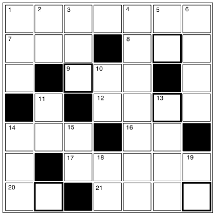

クロスワード
【→ PDF（印刷用）】

- タテのカギ
-
- １. あまりしゃべらないこと。
- ２. 動物の身体の表面。
- ３. 「○○○があるので行けません。」
- ４. 初めて会う人に自分の名前や身分などを知らせること。
- ５. 「悪い」の反対は？［い形容詞］
- ６. 身体を動かすこと。
- 10. 身体の中間にあって、曲げたり回したりする部分。
- 11. うでの中間にあって、外側に曲がる部分のこと。
- 13. 車を運転すること。車に乗って出かけること。
- 14. 野球で攻撃が失敗すること。
- 15. 身体を支える部分のこと。人は２本、犬は４本。
- 18. 体重がふつうより少ない人のこと。
- 19. 金属でできた容器。○○ビール。
- ヨコのカギ
-
- １. 感情による顔の変化が少ないこと。また、そのような人。
- ７. よくなるようにいろいろと考えること。
- ８. 『硬貨』は外来語で何という？
- ９. 事故で死ぬこと。
- 12. 筆で文字を書く芸術。
- 14. 日本や台湾が含まれる地域のこと。東○○○。東南○○○。
- 16. 『おもて』の反対は？
- 17. 小学校や中学校の科目のひとつ。歴史や地理などを学ぶ。
- 20. 1000Kgは１○○。
- 21. ある物を構成するそれぞれの物質、またはその内容のこと。
【→ 解答を見る】